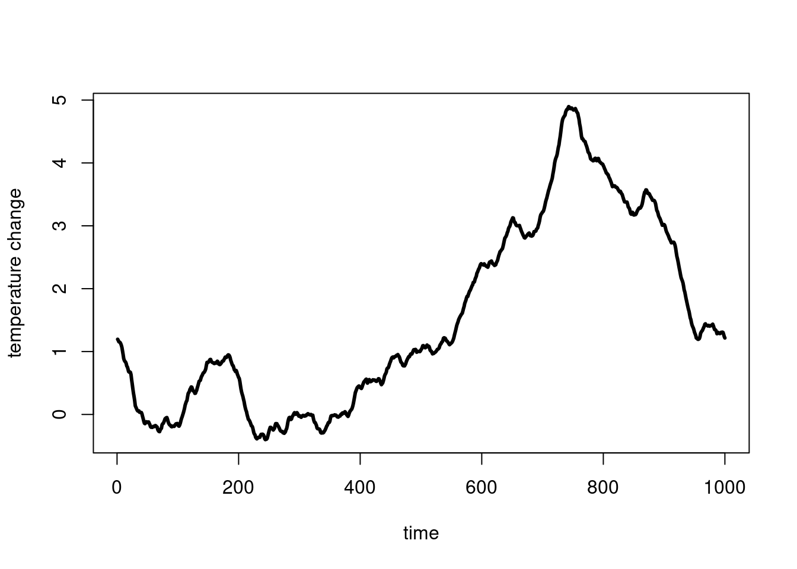
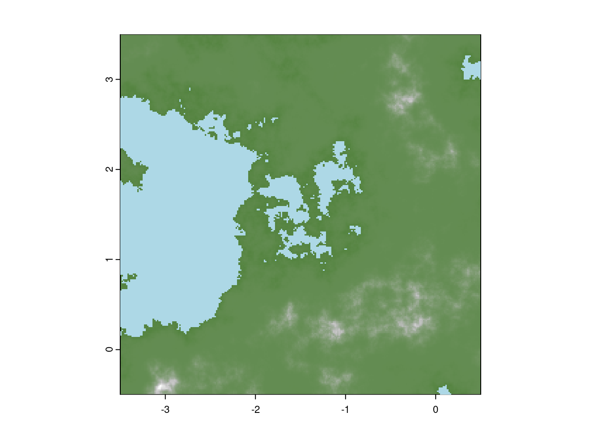
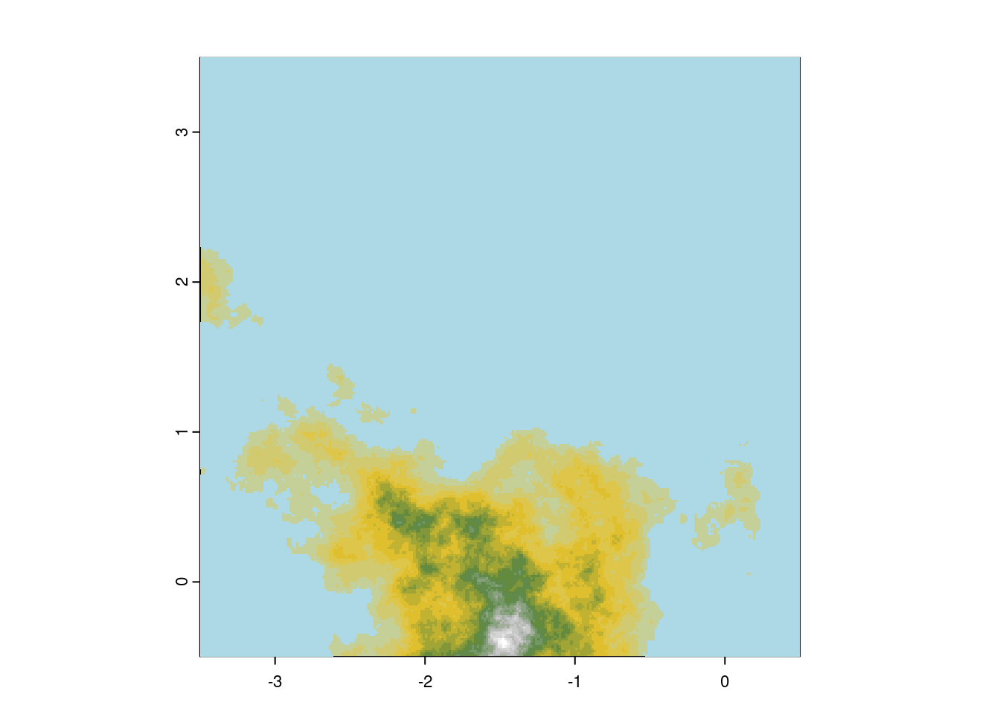
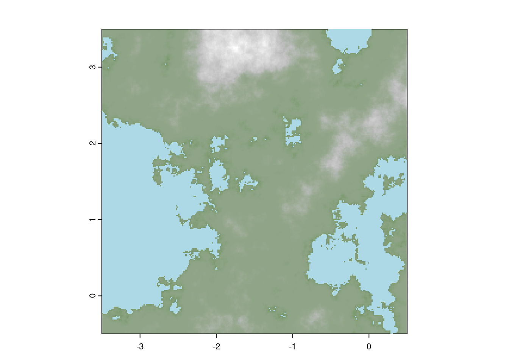
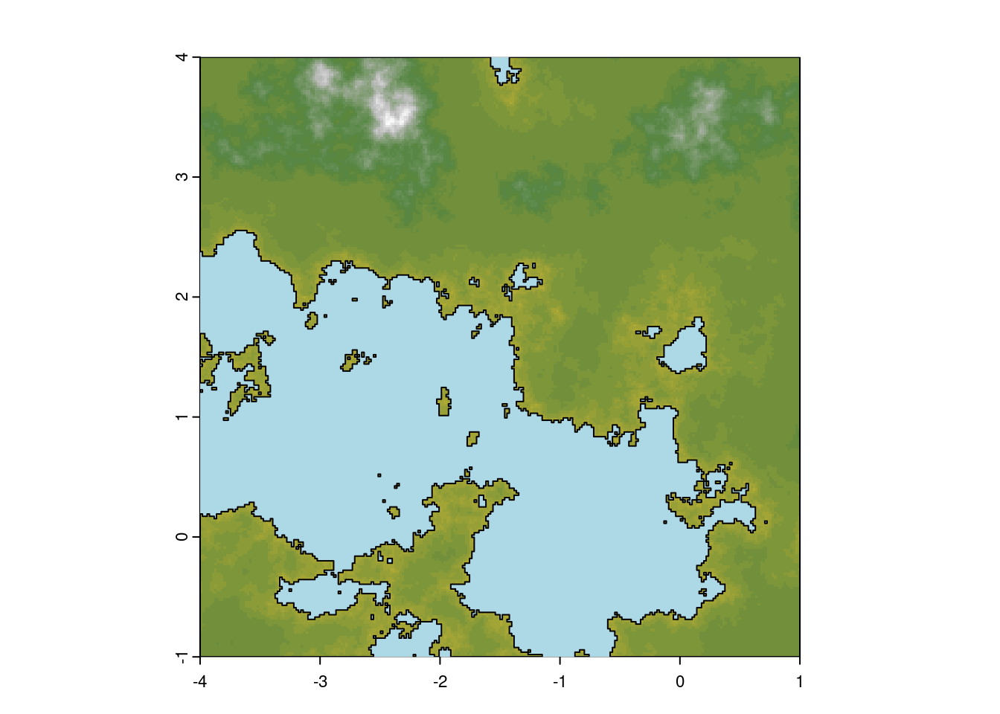
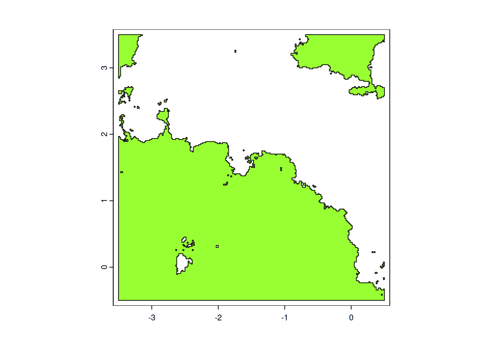

2 Landscape, climate & Environment
2.1 Temperature and climate
To simulate the interaction between two groups, we need an environment in which they can interact in. This chapter walks you through how to generate a landscape and an environment for your simulated groups to explore. An important part of the simulation is to generate a landscape and an environment. Environmental variable are often autocorrelated. The temperature at a given time is never extremly different to the temperature slightly before and slightly after this time. Same is true with the slope, or the elevation of a place.
An interesting way to generate such auto-correlated variable is to use coloured noise. This use specific distribution to define the relation between frequencies found in your signal with the power of these frequencies. In pink noise (or \(\frac{1}{f}\)-noise) for example, the power of each frequencis will be invertly proportional to the frequencies (ie you will have, low frequencies with high power, high frequencies with low ones). We defined an environment function, which in turns uses TK95 to generate a power law noise.
To generate a single auto-correlated variable (like temperature), who’s spectrum decomposition ( power wrt frequency) has a slope of -3 and a standard deviation of 1.5:
tstep <- 1000
faketemp <- environment(tstep, omega=3, delta=1.5) + 1.5
plot(faketemp, type="l", ylab="temperature change", xlab="time") 
You can inspect the code ofenvironment and TK95 functions here:
Show code
Code
## Function 10. Power law noise from Kimmer & Koening
TK95 <- function(N, alpha = 1){
f <- seq(from=0, to=pi, length.out=(N/2+1))[-c(1,(N/2+1))] # Fourier frequencies
f_ <- 1 / f^alpha # Power law
RW <- sqrt(0.5*f_) * rnorm(N/2-1) # for the real part
IW <- sqrt(0.5*f_) * rnorm(N/2-1) # for the imaginary part
fR <- complex(real=c(rnorm(1), RW, rnorm(1), RW[(N/2-1):1]),
imaginary=c(0, IW, 0, -IW[(N/2-1):1]),
length.out=N)
# Those complex numbers that are to be back transformed for
# Fourier Frequencies 0, 2pi/N, 2*2pi/N, ..., pi, ..., 2pi-1/N
# Choose in a way that frequencies are complex-conjugated and symmetric around pi
# 0 and pi do not need an imaginary part
reihe <- fft(fR, inverse=TRUE) # go back into time domain
return(Re(reihe)) # imaginary part is 0
}
## Function 11. Environment generator
environment <- function(N, omega, delta, vt=NULL){
ts <- TK95(N, omega)
ts <- delta * ts/sd(ts)
if(!is.null(vt)) {
ts = ts + vt*1:N
}
return(ts)
}2.2 Slope and Elevation
This generates autocorrelated time series that can be used to define temporal change in climate (rain, temperature, etc….). But we also need a way to generate elevation and slope. To generate 2D autocorrelation we used a slightly methods known as perlin noise ; using the implementation found on this stackoverflow.com post.
Show code
Code
## Function 12. Perlin noise
perlin_noise <- function(
n = 5, m = 7,
N = 100, M = 100
) {
# For each point on this n*m grid, choose a unit 1 vector
vector_field <- apply(
array( rnorm( 2 * n * m ), dim = c(2,n,m) ),
2:3,
function(u) u / sqrt(sum(u^2))
)
f <- function(x, y) {
# Find the grid cell in which the point (x,y) is
i <- floor(x)
j <- floor(y)
stopifnot( i >= 1 || j >= 1 || i < n || j < m )
# The 4 vectors, from the vector field, at the vertices of the square
v1 <- vector_field[, i, j]
v2 <- vector_field[, i+1, j]
v3 <- vector_field[, i, j+1]
v4 <- vector_field[, i+1, j+1]
# Vectors from the point to the vertices
u1 <- c(x,y) - c(i, j)
u2 <- c(x,y) - c(i+1, j)
u3 <- c(x,y) - c(i, j+1)
u4 <- c(x,y) - c(i+1, j+1)
# Scalar products
a1 <- sum( v1 * u1 )
a2 <- sum( v2 * u2 )
a3 <- sum( v3 * u3 )
a4 <- sum( v4 * u4 )
# Weighted average of the scalar products
s <- function(p) 3 * p^2 - 2 * p^3
p <- s( x - i )
q <- s( y - j )
b1 <- (1-p)*a1 + p*a2
b2 <- (1-p)*a3 + p*a4
(1-q) * b1 + q * b2
}
xs <- seq(from = 1, to = n, length = N+1)[-(N+1)]
ys <- seq(from = 1, to = m, length = M+1)[-(M+1)]
return(outer( xs, ys, Vectorize(f) ))
}Various parameters for the Perlin noise will result in either a higher or lower level of definition for our future DEM raster. Our aim is to find a balance between having the environment sufficiently detailed across a relatively wide area, while also ensuring it remains manageable in terms of memory usage.
require(terra)
require(sf)
a <- 0.6
k <- 8
m <- perlin_noise(2, 2, 2^k, 2^k)
for ( i in 2:k )
m <- m + a^i * perlin_noise(2^i, 2^i, 2^k, 2^k)If we change k (that dictates the total resolution of the DEM), the size of the raster grow explonentially and would be quickly hard to manage.
allsizes <- sapply(1:8,function(k)
{
print(k)
m <- perlin_noise(2, 2, 2^k, 2^k)
for ( i in 2:k ) m <- m + 0.6^i * perlin_noise(2^i, 2^i, 2^k, 2^k)
object.size(m)
})
## [1] 1
## [1] 2
## [1] 3
## [1] 4
## [1] 5
## [1] 6
## [1] 7
## [1] 8
plot(2^(1:8),allsizes/1000,type="b",pch=20,col="red",cex=2,ylab="size of raster (kb)", xlab="resolution")
To enhance realism, slight adjustments were made to the extremes in order to create seas and mountains that more closely resemble those found in an real DEM.
height <- (m[,])*20
#height[height<50]=0
height <- height^3
height <- height+abs(mean(height))
height[height<min(height)*.25] <- min(height)*.25We can then visualise the result as a 2D raster. We setup the total extent of the raster to define exactly where it is on our GIS using a latlon projection.
We also defin the mean high as the water level, all the thing below are then considered under water.
height.ras <- rast(height, extent=c(-3.5, 0.5, -0.5, 3.5), crs="+proj=latlon")
maxh <- max(height.ras[], na.rm=T)
col_ramp <- colorRampPalette(c("#54843f", "grey", "white")) #define color ramp for visualisation
plot(height.ras^1.9, col=col_ramp(20), legend=F, reset=F)
height.wat <- height.ras
height.wat[height.wat>mean(height.wat[])] <- NA
plot(height.wat, col="lightblue", add=T, legend=F) This has been put in a function plotMap

The actual raster used for the original archaeoriddle is available in data_original/east_narnia4x.tif and looks like
original.ras <- rast("data_original/east_narnia4x.tif")
plot(original.ras^1.9, col=col_ramp(20), legend=F, reset=F)
original.wat <- original.ras
original.wat[original.wat>mean(original.wat[])] <- NA
plot(original.wat, col="lightblue", add=T, legend=F)

If you really want to feel like being in a video game, you can play with rayshader, but getting the right parameters to have a nice rendering is tricky, slow, and it’s not unlikely you’ll loose a lot of time ¯\_(ツ)_/¯
require(rayshader)
height_map <- raster_to_matrix(raster::raster(height))
hm_shade <- sphere_shade(height_map, texture = "imhof1", zscale=5)
hm_ray <- add_shadow(hm_shade, ray_shade(height_map, zscale = 19), 0.8)
hm_ambiant <- add_shadow(hm_ray, ambient_shade(height_map), 0,5)
hm_lamb <- add_shadow(hm_ambiant, lamb_shade(height_map), 0)
plot_3d(
hm_lamb,height_map, zscale = 10, fov = 0, theta = 20, zoom = .5, phi = 45,
windowsize = c(1000, 800),water = TRUE, waterdepth = 0,
wateralpha = 1, watercolor = "lightblue", waterlinecolor = "lightblue",
waterlinealpha = .7, baseshape="hex")
#HQ render, very slow
#render_highquality( samples=256, clear = TRUE,light=TRUE)2.3 Settlements position
Given this new landscape we can now generate sites in specific locations. We first need to define where the sites can appear (not in water nor too high in the mountains)
n <- 20 # we will create 20 sites
size <- rexp(n) #assign a size for each site following an exponential distribution
height.groups <- height.ras # taking back the raster created before
height.groups[height.groups<mean(height.groups[])] <- NA #replace values that are below mean level (under water)
height.groups[height.groups<(maxh*.7)] <- 1 # values below 70% of the maximum height are set as 1
height.groups[height.groups>(maxh*.7)] <- 200 # value above at 200 (high mountains)
height.groups[is.na(height.groups)] <- -1 # NA values (below waters) are set to -1
height.poly <- as.polygons(height.groups) # convert height.groups as polygons that will be of three type: -1 => under water, 1, viable, and 200, high mountaines
viable <- makeValid(height.poly[2,]) # select polygon with '1' and make it a valid polygon as it may have some loop and problemsWe now have a polygon viable representing the space where sites can be create.
This space is representing by the green area on the map below.

We can now use simply and directly use spatSample from package terra to randomly select n points (20 for this simulation) on this viable polygon.
sites <- spatSample(viable, n) # generate n random points within the viable polygon and assign to variable sites
plot(height.ras^1.9, col=col_ramp(50), legend=F, reset=F)
plot(height.wat, col="lightblue", add=T, legend=F)
plot(sites, cex=2, pch=21, add=T, bg=rainbow(length(sites), alpha=.6))
# get only the non submerged actual land and plot it
above_level <- height.ras > mean(height.ras[])
coastline <- st_as_sf(as.polygons(above_level))[2,]
plot(coastline, col=NA, bgc=adjustcolor("cyan", 0.1), add=T)
In the context of the archaeoriddle challenge, files that describe this newly generated environment and the sites sampled on top of it needs to be produced and given to the participant. This can be done as:
foldname="data_toshare" #We will store all data that can/will be shared with participant in data_toshare
if(!file.exists(foldname))dir.create(foldname)
st_write(dsn=file.path(foldname,"coastline.shp"), coastline,append=F) # Write the coastline as a shapefile
## Writing layer `coastline' to data source
## `data_toshare/coastline.shp' using driver `ESRI Shapefile'
## Writing 1 features with 1 fields and geometry type Multi Polygon.
writeRaster(filename=file.path(foldname,"dem_raster.tiff"), height.ras, overwrite=T) #write the DEM as a rasterThe original data, saved and shared for the archaeoriddle are stored in data_original/
2.4 Network, Site Size And Climate – DEPRECATED
The following steps were designed but never used ; they can be quite fun and useful.
Create a network between sites (requires igraph)
library(igraph)
crs(sites) <- "+proj=lonlat"
sites <- sites[sample(nrow(sites), 20), ]
ig <- graph_from_adjacency_matrix(
as.matrix(distance(sites)), weighted=T, mode="undirected")
ig <- set_graph_attr(ig, "layout", crds(sites))
V(ig)$label <- ""
V(ig)$size <- (size+1)*5
V(ig)$frame.color <- "black"
V(ig)$frame.width <- .5
E(ig)$weight <- 1/(E(ig)$weight^2)
E(ig)$width <- exp(E(ig)$weight)+.6
allcomu <- cluster_louvain(ig)$memberships[1,]
V(ig)$color <- allcomu
E(ig)$color <- allcomu[head_of(ig,E(ig))]
plot(height.ras^1.9, col=col_ramp(50), legend=F, reset=F)
plot(height.wat, col="lightblue", add=T, legend=F)
plot(ig, add=T, rescale=F, alpha=.2)
Visualise sites on the 3D plot
plot_3d(
hm_lamb,height_map, zscale=20, fov=0, theta=20, zoom=1, phi=45,
windowsize=c(1000, 800), water=TRUE, waterdepth=mean(height),
wateralpha=1, watercolor="lightblue", waterlinecolor="lightblue",
waterlinealpha=.7
)
render_points(
extent=raster::extent(raster::raster(height.ras)),
lat=2.13828, long=-1.685547, altitude=extract(height.ras,sites)[,1]+20,
zscale=20, size=1, col=categorical_pal(max(allcomu))[allcomu],
clear_previous=TRUE
)
render_points(
extent=raster::extent(raster::raster(height.ras)),
lat=crds(sites)[,"y"], long=crds(sites)[,"x"], altitude=extract(height.ras, sites)[,1]+20,
zscale=20, size=1, col=categorical_pal(max(allcomu))[allcomu],
clear_previous=TRUE
)
render_highquality(point_radius=5, samples=256, clear=TRUE, light=TRUE)let’s say the climate modulate site size in a naive way:
for(i in seq(1, tstep, length.out=100)){
layout(matrix(1:2, nrow=2, ncol=1), heights=c(.8, .2))
par(mar=c(1, 2, 2, 1))
image(m, ann=F, axes=F, main=i)
mtext(round(i), 3, 1)
nsize <- size*faketemp[i] + size + 1
points(crds(sites), bg="green", pch=21, cex=nsize)
par(mar=c(2, 2, 0, 1))
plot(
1:tstep, faketemp, type="l", ylab="temp", xlab="time", ylim=range(faketemp),
ann=F, frame.plot=F)
points(i, faketemp[i], col="red", pch=20)
}